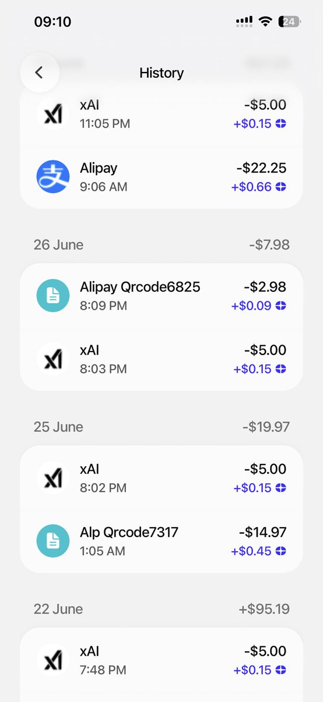

奶昔🥤
@realNyarime
@Q_Qsheep U卡的原则是，用多少充多少。特别是Plasma这些的我很喜欢，他们的链转账手续费几乎为0，够用就好
信用卡和U卡的区别是，遇到这种情况你压根找不到人Dispute，交易所只会说不好用别用，完全无法争议回来

曼波
@Q_Qsheep
😭到底怎么回事啊 我发现我的u卡前几天一直给我扣款
急了我真急了 扣了我50U了
就是这个xAI
我只记得第一次我用了x的端口查讯息充了五美金 为啥后面一直给我扣五美金
我去了xai的控制台最近也没有tokens没有消耗啊 https://t.co/1BvmeBTB6j